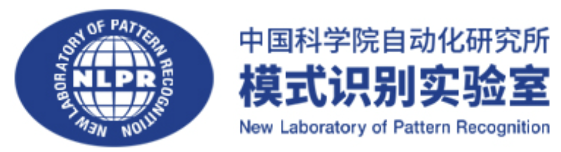

Hi! I’m Haitian Zhong (仲海天, aka JZSAWYER), I will become a first-year Ph.D. student at the New Laboratory of Pattern Recognition (NLPR), the Institute of Automation of the Chinese Academy of Sciences (CASIA ) from Sept. 2024, advised by Prof. Tieniu Tan(谭铁牛), co-advised by Prof. Qiang Liu(刘强) and Prof. Shu Wu(吴书). Formerly, I was a research asssistant at Microsoft Research Asia.
) from Sept. 2024, advised by Prof. Tieniu Tan(谭铁牛), co-advised by Prof. Qiang Liu(刘强) and Prof. Shu Wu(吴书). Formerly, I was a research asssistant at Microsoft Research Asia.
I obtained my Bachelor’s degree in Mathematics and Applied Mathematics from Cuiying Honors College (China’s Top-notch Undergraduate training program 2.0), Lanzhou University. I was nominated as the Undergraduate Graduate Representative of Lanzhou University. During my undergraduate period, I won two Excellence Awards at 2022 S.-T. Yau College Student Mathematics Contest in the subjects of Analysis and Partial Differential Equations (分析与偏微分方程) and Applied and Computational Mathematics (应用与计算数学). This distinction made me the FIRST winner ever from Lanzhou University to be recognized in these two subjects.
My research interests include Large Language Models (LVLM Editing and LLM Safety) and AI for Science (Bioinformatics). You may relate to my personal CV for more information. For my academic transcript you may refer to Chinese transcript OR English transcript.
Outside of research, I’m a big fan of Chelsea Football Club and the Los Angeles Lakers
and the Los Angeles Lakers . My GOATs are Lionel Messi⚽ and LeBron James🏀 in their respective fields. In my free time, I enjoy running👟 and playing basketball🏀 a lot.
. My GOATs are Lionel Messi⚽ and LeBron James🏀 in their respective fields. In my free time, I enjoy running👟 and playing basketball🏀 a lot.
Feel free to reach out if you want to chat or collaborate (haitian DOT zhong AT cripac DOT ia DOT ac DOT cn)!
🔥 News
- 2024.06: 🔥🔥 Manuscripts VLKEB: A Large Vision-Language Model Knowledge Editing Benchmark released on arXiv! A collabrative work with Han Huang(黄瀚), advised by Prof. Qiang Liu and Shu Wu. See our codes at github:VLKEB, dataset at huggingface:VLKEB!
- 2024.03: Worked as a research assistant at MSRA
 , studying LLM Safety.
, studying LLM Safety. - 2024.03: 🔥🔥🔥 Our paper PTransIPs: Identification of phosphorylation sites enhanced by protein PLM embeddings is accepted to IEEE J-BHI! A collabrative work with Ziyang Xu(徐子扬), advised by Tianchi Lu(卢天驰).
- 2023.10: Worked as an undergraduate reseacher at CRIPAC-DIG, studying LVLM Editing.
- 2023.07: 🎉 Tentitively accepted by CASIA as a Ph.D. Candidate.
- 2023.04: 🎖️ Won Provicial First Prize (2nd place) at the 14th Chinese Mathematics Competition. Did’t attend national final due to COVID-19.
- 2023.03: 🎖️ Won National Second Prize at the 13th Chinese Mathematics Competition. Thanks to Mr. Xiangkun Wu(武翔坤) for his assistance!
- 2022.07: 🎖️🎖️ Won two Excellence Awards at 2022 S.-T. Yau College Student Mathematics Contest. First person in the history of LZU.
📝 Publications
🧬 AI for Science
PTransIPs: Identification of phosphorylation sites enhanced by protein PLM embeddings
Ziyang Xu†, Haitian Zhong†, Bingrui He, Xueying Wang, Tianchi Lu
-
Work: We present PTransIPs, a new deep learning framework for the identification of phosphorylation sites in host cells infected with SARS-CoV-2. It utilizes protein pre-trained language model (PLM) embeddings and transformer structure to make the final prediction, with transductive information maximization (TIM) loss to better evaluate the error. PTransIPs is also a universal framework for all peptide bioactivity tasks.
-
Performance: After comparing PTransIPs with five existing phosphorylation site prediction tools, we notice it achieves the best performance in all five model evaluation metrics (ACC, SEN, SPEC, MCC, AUC) for both S/T and Y sites.
-
Impact: We hope that PTransIPs will aid in deepening the understanding of SARS-CoV-2 phosphorylation sites and look forward to enhancing PTransIPs in the future to become a more powerful tool for the scientific community.
-
Codes:
📄 Manuscripts

VLKEB: A Large Vision-Language Model Knowledge Editing Benchmark
Han Huang†, Haitian Zhong†, Qiang Liu, Shu Wu, Liang Wang, Tieniu Tan
-
Abstract: Recently, knowledge editing on large language models (LLMs) has received considerable attention. Compared to this, editing Large Vision-Language Models (LVLMs) faces extra challenges from diverse data modalities and complicated model components, and data for LVLMs editing are limited. The existing LVLM editing benchmark, which comprises three metrics (Reliability, Locality, and Generality), falls short in the quality of synthesized evaluation images and cannot assess whether models apply edited knowledge in relevant content. Therefore, we employ more reliable data collection methods to construct a new Large Vision-Language Model Knowledge Editing Benchmark, VLKEB, and extend the Portability metric for more comprehensive evaluation. Leveraging a multi-modal knowledge graph, our image data are bound with knowledge entities. This can be further used to extract entity-related knowledge, which constitutes the base of editing data. We conduct experiments of different editing methods on five LVLMs, and thoroughly analyze how do they impact the models. The results reveal strengths and deficiencies of these methods and hopefully provide insights for future research.
-
Codes:
-
Dataset: Kaggle; huggingface.

🎖️ Honors and Awards
- 2024.06 🔥🔥Undergraduate Graduate Representitive of Lanzhou University, ranked 1/37 of all oustanding graduate nominees. News📰
- 2024.03 🔥Provincial Outstanding Graduates (2 out of 100 students in China’s Top-notch Undergraduate training program) Full List📜
- 2024.03 Outstanding Graduates of Lanzhou University Full List📜
- 2023.12 University Merit Scholarship, First Class (Top 1%) Full List📜
- 2023.04 The $14^{th}$ Chinese Mathematics Competition, Provincial First Prize (2nd place) Full List📜
- 2023.03 🔥The $13^{th}$ Chinese Mathematics Competition, National Second Prize Full List📜
- 2022.11 University Merit Scholarship, First Class (Top 1%) Full List📜
- 2022.07 🔥🔥2022 S.-T. Yau College Student Mathematics Contest (Analysis and Partial Differential Equations), Excellence Prize Full List📜
- 2022.07 🔥🔥2022 S.-T. Yau College Student Mathematics Contest (Applied and Computational Mathematics), Excellence Prize Full List📜
- 2022.05 National English Competition for College Students, National First Prize(Top 1%) Full List📜
- 2021.11 University Merit Scholarship, First Class (Top 1%) Full List📜
📖 Educations
- 2024.09 - 2029.06(Expected), Ph.D., NLPR, CASIA, Beijing, China. (Supervisor: Tieniu Tan, Co-supervisor: Qiang Liu and Shu Wu)
- 2020.09 - 2024.06, B.S. in Mathematics, Cuiying Honors College, Lanzhou University, Lanzhou, Gansu.
- 2014.09 - 2020.06, Nanjing Foreign Language School (NFLS), Nanjing, Jiangsu.
💼 Experiences
- 2021.07, Summer Semester of Cuiying Honors College, Lanzhou University.
- Coursework: Multi-scale Models, Algorithm and Analysis(Pingbing Ming, Chinese Academy of Sciences); Integrating Data and Dynamics in scRNA-seq Data Analysis(Tiejun Li, Peking University); Distance-regular graphs(Jacobus Hendricus Koolen, University of Science and Technology of China).
- 2023.07, The 9th International Forum on Statistics, Mingde Building, Renmin University of China.
- Plenary Talks: Fast Distributed Principal Component Analysis of Large-Scale Federated Data (Xihong Lin, Harvard University); On Dynamics-Informed Blending of Machine Learning and Microeconomics Speaker (Michael I. Jordan, University of California, Berkeley); Optimal Nonparametric Testing of Missing Completely at Random, and Its Connections to Compatibility (Richard J. Samworth, University of Cambridge).
- Distinguished Session: Generating Robust Evidence with Multi-institutional EHR Data (Tianxi Cai, Harvard University); Genetic Studies of Human Brain Imaging Data (Heping Zhang, Yale University).
- Invited Sessions: 2D-Shapley: A Framework for Fragmented Data Valuation (Xiangyu Chang,Xi’an Jiaotong University); Consistent Selection of the Number of Groups in Panel Models via Sample-Splitting (Xuening Zhu, Fudan University); Efficient, Stable, and Analytic Differentiation of the Sinkhorn Loss (Yixuan Qiu, Shanghai University of Finance and Economics); Peer-Label Assisted Hierarchical Text Classification (Feifei Wang, Renmin University of China).
{kind=link}
💻 Internships
- 2023.03 - 2023.06, Research Assistant, MSRA-SC, Beijing. Certificate
- 2023.10 - 2023.02, Undergraduate Researcher, CRIPAC-DIG, Beijing.